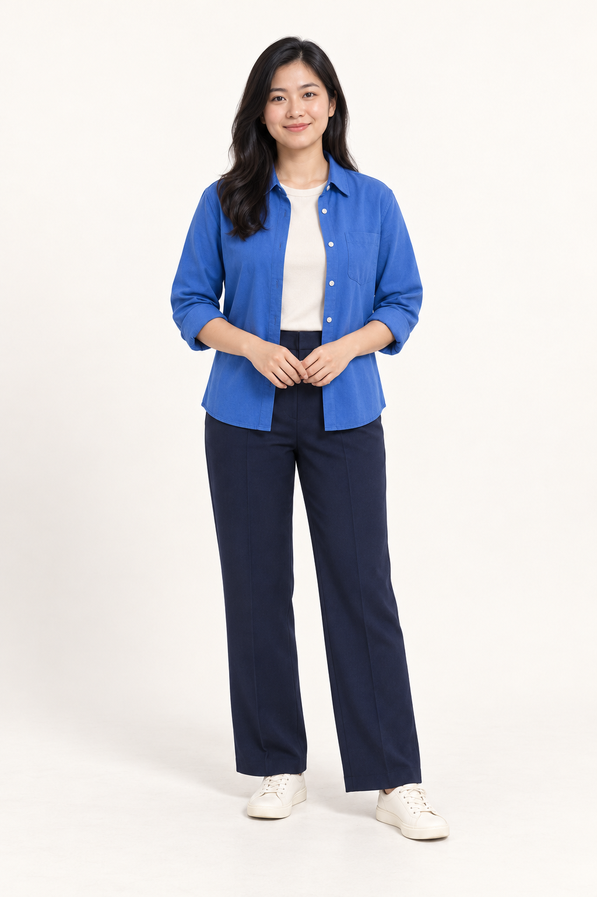
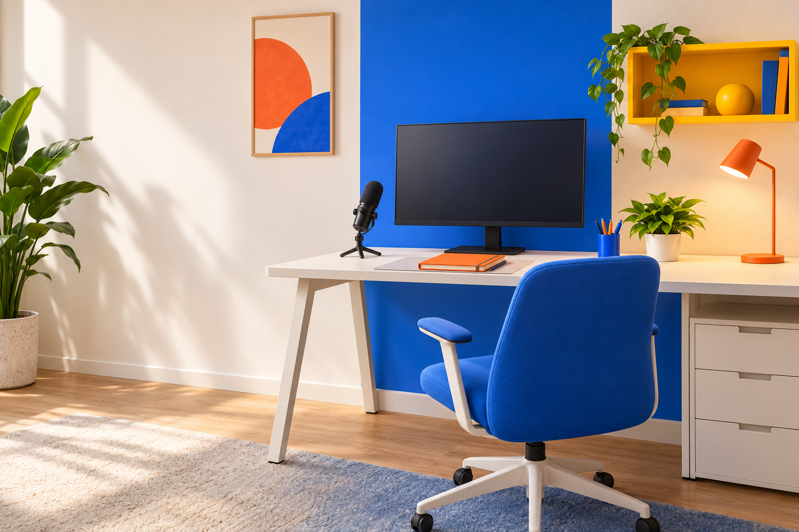

Biên tập: người, chữ và hình có vùng riêng
Ba hình thức nội dung, kèm hai ảnh riêng cho trang phục và bối cảnh. Các ví dụ dưới đây là bố cục tĩnh, chưa phải video đã dựng.
01 · Người dẫn và đồ họa
Giữ nguồn
cạnh kết luận.
Một bước, một ví dụ, một cách kiểm.

Chọn vị trí đồ họa theo hành động và hướng nhìn trong cảnh thật. Không phủ chữ qua mặt, bàn tay đang thao tác hoặc phụ đề.
02 · Chỉ có đồ họa
Ba câu hỏi trước khi dùng.
- 01Nguồn ở đâu?
- 02Điều kiện nào?
- 03Kiểm bằng cách gì?
Nội dung minh họa; thay bằng dữ kiện của nhiệm vụ.
Đưa hình vào theo ý được nói, nghỉ đủ để đọc. Thời lượng cần kiểm cùng lời nói và nội dung thật; bản giảm chuyển động giữ thông tin tĩnh.
03 · Chia sẻ màn hình
Đọc nguồn trước.
Chọn việc sau.
- Mở nguồn cần đối chiếu.
- Chỉ rõ phần đang giải thích.
- Giữ nút và dữ liệu quan trọng không bị che.
Đây là sơ đồ bố cục; không phải ảnh chụp phần mềm.
04 · Trang phục
Ưu tiên vải ít họa tiết, màu tách nền, chuyển động thoải mái. Kiểm nhiễu sọc, bóng đổ và độ tách nền bằng cảnh quay thật.
05 · Bối cảnh

Đặt người, màn hình và đồ họa theo cảnh quay thật. Giữ đường nét phía sau mặt gọn; kiểm ánh sáng, âm thanh và phụ đề trước khi xuất.
Ảnh tạo bằng AI dùng để minh họa cách sắp xếp. Nhân vật hư cấu không đại diện một người thật. Nhịp cắt, chuyển động, phụ đề và âm thanh phải theo nội dung thực tế; chưa có bản video hoặc quyền phát hành được chứng nhận.